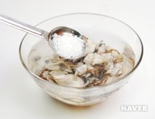
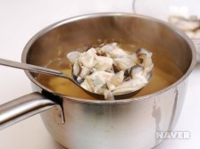

국내법률
HOME>웹접근성> 법·제도> 국내법률
장애인차별금지법에 의한 권리구제 절차
행정기관을 통한 권리구제(국가인권위원회, 법무부)
- 진정접수
- 국가인권위원회 조사
- 국가인권위원회 결정
- 시정 권고
- 진정인, 피진정인, 법무부 장관에 전달
- 법무부 장관
- 시정명령
- 불이행시과태료 부과
멜론 차트 2022.12.15
- 사건의 지평선
- Hype boy
- ANTIFRAGILE
- 사랑은 늘 도망가
- 마이웨이
- LIKE
- Nxde
- 우리들의 블루스
- 다시 만날수 있을까
- Attention
3) 요리과정
01. 무는 껍질을 제거하고 0.5cm 두께로 채 썬다. 대파는 어슷 썬다. - 
02.굴은 소금물에 넣고 살살 흔들어 씻는다. 체에 밭쳐 흐르는 물에 헬권 물기를 뺀다.
03. 냄비에 멸치 육수, 무, 건고추, 마늘을 넣고 센 불에서 끓인다.- 
04. 무가 익으면 건고추를 건져 내고 굴, 대파, 간장을 넣고 굴이 익을 때까지 끓이고 소금으로 간한다.